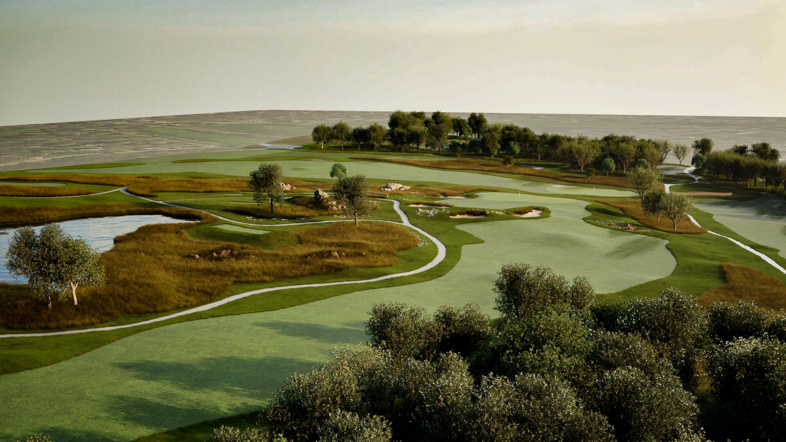
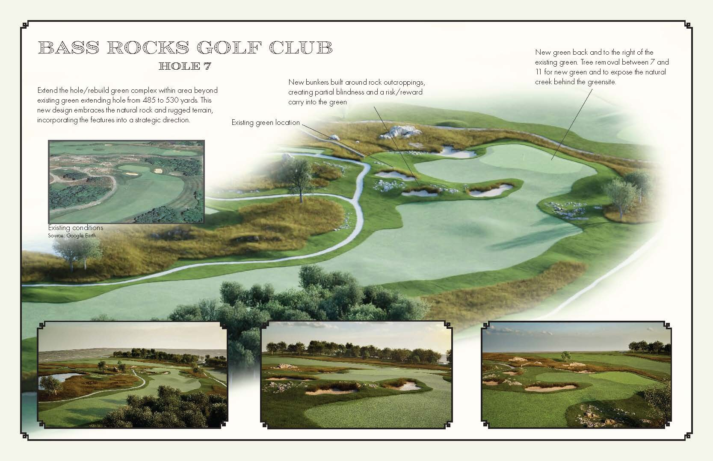
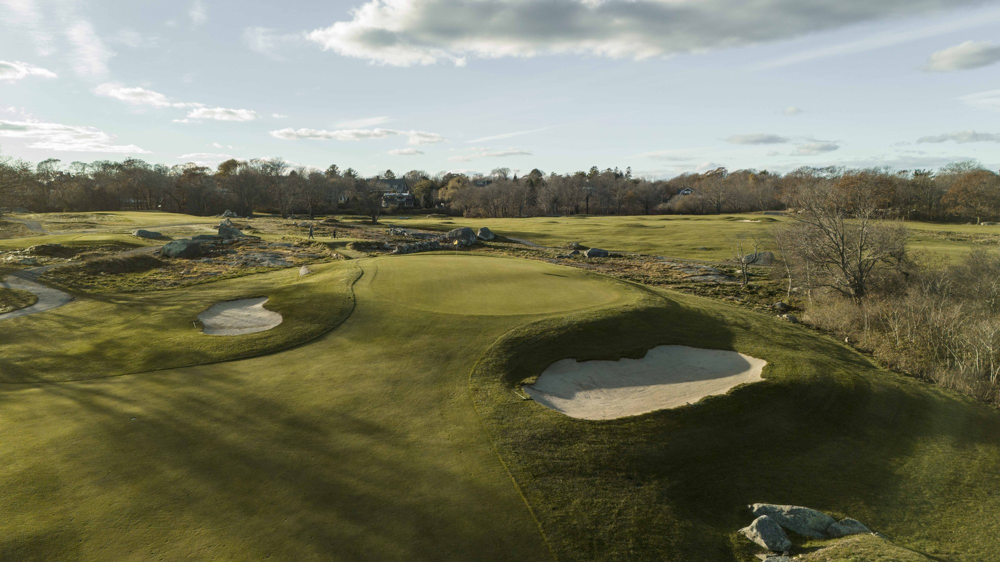
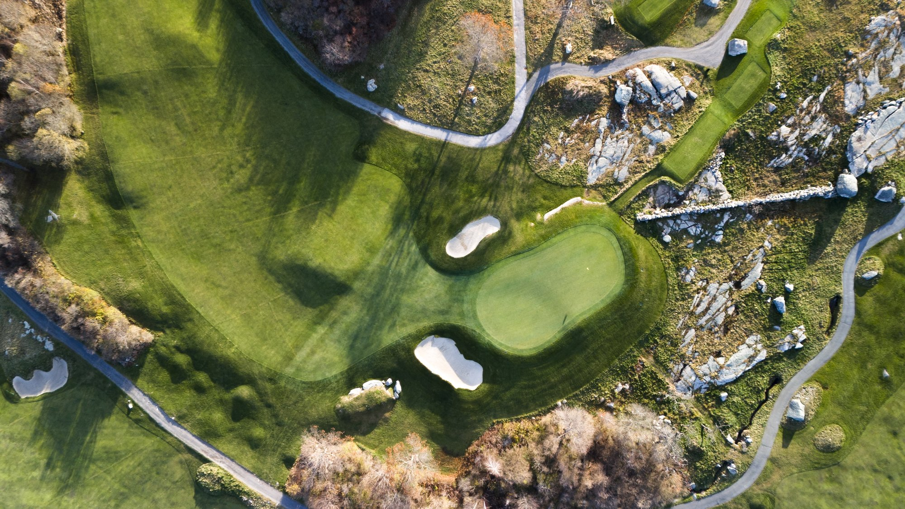
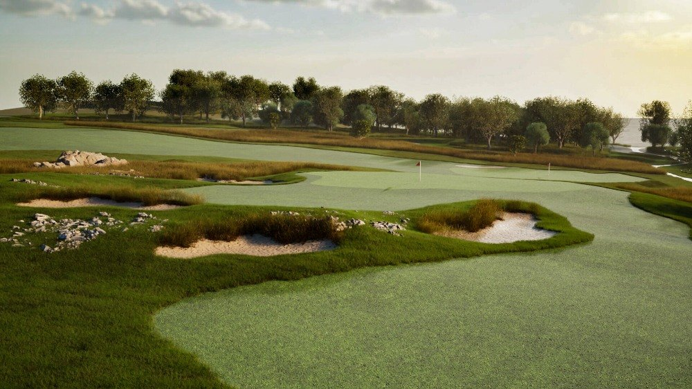
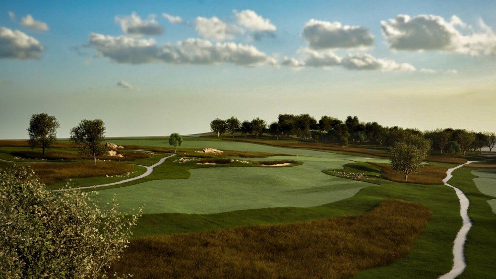
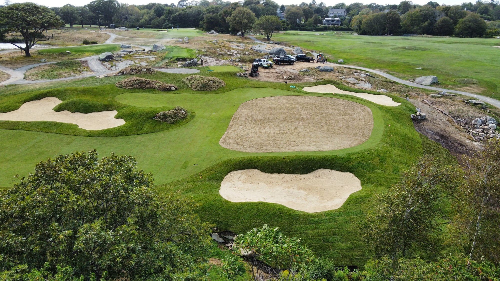
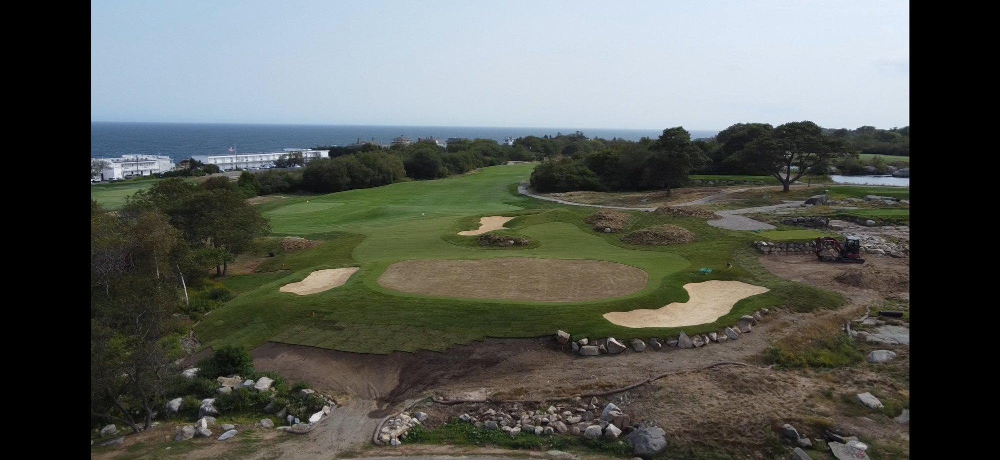

Hole 7 was originally built in the 1990s by Philip Wogan as part of a rerouting that created the current 7th, 8th, and 9th. The hole always had an intriguing par-5 profile — a raised green, rock outcroppings, interior fairway mounding — but it lacked the rugged, old-school character that defines the rest of Bass Rocks.
The reconstruction was prioritized as one of two high-value early projects in the 2024 master plan. The brief: rebuild the green complex for more strategic and aesthetic interest, lengthen the hole to meet modern distances, and bring the surrounding rock and turf into the framing of the shots.
Work was completed in 2024. The seventh now reads as a Bass Rocks hole first — exposed rock, native ground, harder edges — and a Wogan hole second.
Drag the handle to compare the existing par-5 corridor against the proposed plan — a rebuilt green, repositioned bunkering, and stronger integration with the surrounding rock.
The corridor stays where Wogan left it, but the green complex, the surrounding bunkering, and the framing of the natural rock have all been reimagined. The result is a par-5 that finally plays like the rest of Bass Rocks.
The Hole 7 design sheet was the working document carried through construction. It locates the new green, fixes the rebuilt bunkering and lay-up zones, and registers the relationship between the corridor and the rock outcroppings to the right of the green.

Two reference photographs of the hole prior to reconstruction — the existing green complex, the surrounding native rock, and the corridor that frames the second shot.


Renderings produced during the design process depict the rebuilt green complex, the restyled bunkering, and the integration of native rock into the framing of the approach.


Frames from the build — careful shaping and earthmoving to realize the design intent while preserving the surrounding rock and turf.


Three goals shaped the brief: bring the seventh's character into line with the rest of the course, give it real strategic depth for both skill levels, and make sure it holds up at modern par-5 distances.
Restyled bunkering, exposed rock, and harder edges around the green tie the seventh to the rest of the property. The Wogan-era softness is gone; in its place, the rugged old-school presence that the rest of Bass Rocks has always had.
The rebuilt green opens up pin positions that simply didn't exist before. The approach offers a real choice between aggressive line and safe miss — and the recovery options around the new complex reward the player who reads the ground.
Added length brings the hole into line with how par-5s play today, without compromising the experience for shorter hitters. The lay-up still rewards a thoughtful angle, and the second shot for stronger players is meaningful again.
The seventh is now one of the most distinctive holes on the course — a Bass Rocks hole first, and a Wogan hole second.